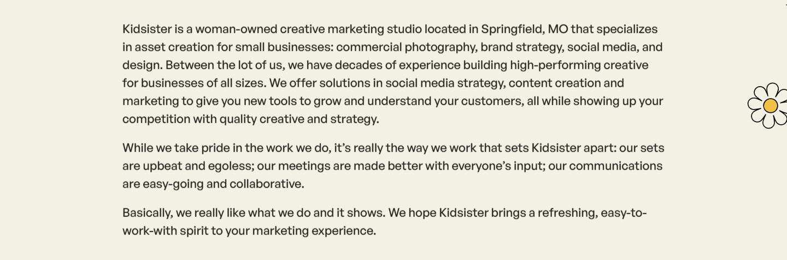

About
The opening now names the services behind “asset creation.”
Before
Kidsister is a woman-owned studio agency located in Springfield, MO that specializes in asset creation for small businesses.
After
Kidsister is a woman-owned studio agency located in Springfield, MO that specializes in asset creation for small businesses: commercial photography, brand strategy, copywriting, and design.

